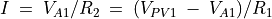
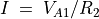
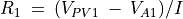

I-V ഗ്രാഫ് വരയ്ക്കുക¶
സ്കൂൾ പരീക്ഷണങ്ങൾ എന്ന വിഭാഗത്തിലുള്ള 'റെസിസ്റ്റൻസ് ഓം നിയമമുപയോഗിച്ച് ' എന്നത്തിന്റെ ഒരനുബന്ധം മാത്രമാണ് ഇത്. ഓം നിയമപ്രകാരം സീരീസായി ഘടിപ്പിച്ച രണ്ടു റെസിസ്റ്ററുകളിലൂടെ കറന്റ് പ്രവഹിക്കുമ്പോൾ അവയോരോന്നിനും കുറുകെയുണ്ടാവുന്ന വോൾടേജ് അവയുടെ റെസിസ്റ്റൻസിന് ആനുപാതികമായിരിക്കും. രണ്ടിനും കുറുകെയുള്ള വോൾടേജ്കളും ഏതെങ്കിലും ഒരു റെസിസ്റ്റൻസും അറിയാമെങ്കിൽ രണ്ടാമത്തെ റെസിസ്റ്റൻസ് ഓം നിയമമുപയോഗിച്ച് കണക്കുകൂട്ടാം. .
ചിത്രത്തിലെ R2 നമുക്കറിയാവുന്ന റെസിസ്റ്റൻസും R1 കണ്ടുപിടിക്കാനുള്ളതും ആണെന്നിരിക്കട്ടെ. R2 ആയി 1000ഓം ഉപയോഗിക്കാം. R1 ന്റെ സ്ഥാനത്ത് ഒരു 2200 ഓം ഉപയോഗിക്കാം.

- ഒരു ബ്രെഡ്ബോർഡിൽ R1ഉം R2വും സീരീസായി ഘടിപ്പിക്കുക
- A1 ടെർമിനൽ രണ്ടു റെസിസ്റ്ററും ചേരുന്ന ബിന്ദുവിലേക്കു ഘടിപ്പിക്കുക
- PV1 ടെർമിനൽ R1ന്റെ ഒരറ്റത്ത് ഘടിപ്പിക്കുക
- R2വിന്റെ ഒരറ്റം ഗ്രൗണ്ടിലേക്ക് ഘടിപ്പിക്കുക
- PV1ലെ വോൾട്ടേജിന്റെ പരിധികൾ സെറ്റ് ചെയ്യുക.
- 'തുടങ്ങുക' എന്ന ബട്ടൺ അമർത്തുക.
R2ലൂടെയുള്ള കറന്റ്  എന്ന സമവാക്യം നൽകും . ഇതേ കറന്റാണ് R1ലൂടെയും ഒഴുകുന്നത്. R1നു കുറുകെയുള്ള വോൾടേജ് PV1 - A1 ആണ് . അതിനാൽ .

വളഞ്ഞിരിക്കുന്ന ഗ്രാഫ് ഒരു ഡയോഡിന്റേതാണ്.